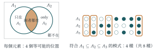

STEP III 2019，第 12 題
繼續之前，請先閱讀題目（原題為英文）。題目載於 OCR 提供下載的 2019 年 STEP 試卷（zip 檔案）內的 STEP III 試卷： www.ocr.org.uk/Images/696590-2019-past-papers.zip
引子
完全隨機地選出 \(\{1, 2, \ldots, 100\}\) 的兩個子集（subset）。它們沒有任何共同元素的可能性有多大？直覺也許會告訴你：「相當大：大多數成對的集合都不相同」。事實上，這個概率是 \(\bigl(\frac34\bigr)^{100}\)，約為 \(3 \times 10^{-13}\)。隨機集合很大（大約佔全部元素的一半），所以它們幾乎總會重疊。
這道題很短，當中唯一的想法卻很有威力：不要把集合當作整體來想，而要每次只想一個元素。一個隨機子集不過是 \(n\) 次獨立（independent）的擲硬幣，每個元素擲一次；於是，凡是關於隨機子集的問題，都變成關於這些擲硬幣結果的問題。
動筆之前
怎樣用 \(n\) 條是非題的一串答案，來描述 \(\{1, \ldots, n\}\) 的一個子集？
對每個元素 \(i\)，回答「\(i\) 在集合裏嗎？」這條問題。子集決定了答案，答案也決定了子集。每個元素有 \(2\) 個選擇，所以一共有 \(2^n\) 個子集。均勻隨機（uniformly at random）地選一個子集，就等於獨立地擲一枚公平硬幣來回答每條問題。
逐步解題
階段 1 一個元素
按照擲硬幣的描述，\(\mathrm{P}(1 \in A_1) = \frac12\)。事實上，\(2^n\) 個子集中恰好有一半包含 \(1\)：把每個不包含 \(1\) 的子集，與加入 \(1\) 之後所得的子集配成一對即可。
階段 2 不相交的集合
要使 \(A_1 \cap A_2 = \varnothing\)，每個元素 \(i\) 必須滿足甚麼條件？就單一個元素而言，這件事的概率是多少？為甚麼可以把各個元素的概率相乘？
\(A_1\) 與 \(A_2\) 不相交（disjoint），當且僅當沒有元素同時屬於兩者。對單一個元素 \(i\) 來說，有四種等可能的情況：兩個集合都不在、只在 \(A_1\)、只在 \(A_2\)、兩個都在（圖 9.12.1 左）。只有最後一種是禁止的，所以 \(i\) 不同時屬於兩者的概率是 \(\frac34\)。不同的元素由不同而且獨立的擲硬幣結果決定，所以 \[\mathrm{P}(A_1 \cap A_2 = \varnothing) = \Bigl(\frac34\Bigr)^n. \qed\] 對三個集合而言，元素 \(i\) 同時屬於三者的概率是 \(\frac18\)，所以 \(\mathrm{P}(A_1 \cap A_2 \cap A_3 = \varnothing) = \bigl(\frac78\bigr)^n\)。一般而言， \[\mathrm{P}(A_1 \cap \cdots \cap A_m = \varnothing) = \Bigl(1 - \frac{1}{2^m}\Bigr)^n. \qed\]
階段 3 子集
要使 \(A_1 \subseteq A_2\)，一個元素的四種情況之中，哪一種是禁止的？
\(A_1 \subseteq A_2\) 不成立，當且僅當有某個元素在 \(A_1\) 裏而不在 \(A_2\) 裏。同樣是四種模式中有一種被禁止，所以 \[\mathrm{P}(A_1 \subseteq A_2) = \Bigl(\frac34\Bigr)^n,\] 與不相交的情況相同。這並非巧合：\(A_1 \subseteq A_2\) 當且僅當 \(A_1\) 與 \(A_2\) 的補集（complement）不相交，而隨機集合的補集也是一個隨機集合。
要使 \(A_1 \subseteq A_2 \subseteq A_3\)，一個元素的 \(8\) 種歸屬模式（在或不在每個集合裏）之中，哪些是容許的？
沿着 \(A_1, A_2, A_3\) 這條鏈（chain）走，一個元素一旦進入，就必須一直留在裏面。所以容許的模式是「不在、不在、不在」、「不在、不在、在」、「不在、在、在」和「在、在、在」：\(8\) 種之中的 \(4\) 種（圖 9.12.1 右）。因此 \(\mathrm{P}(A_1 \subseteq A_2 \subseteq A_3) = \bigl(\frac48\bigr)^n = \bigl(\frac12\bigr)^n\)。
對於由 \(m\) 個集合組成的鏈，一個容許的模式取決於該元素最先進入哪一個集合（\(A_1, \ldots, A_m\) 其中之一，或者從不進入），所以 \(2^m\) 種模式之中有 \(m + 1\) 種是容許的： \[\mathrm{P}(A_1 \subseteq A_2 \subseteq \cdots \subseteq A_m) = \Bigl(\frac{m + 1}{2^m}\Bigr)^n. \qed\]

回顧
按元素分解。每個集合層面的條件（不相交、子集、鏈），都是分別加在每個元素上的條件。
元素之間互相獨立。由於各個元素由獨立的擲硬幣結果決定，概率可以相乘。
數算模式。每個答案都是（容許的模式數 \(\div\) 全部模式數）\(^n\)。
背後的數學
不用概率的計數
把每個概率乘以選擇的總數，就得到一個計數。滿足 \(A_1 \subseteq A_2\) 的有序對 \((A_1, A_2)\) 的數目是 \(4^n \times \bigl(\frac34\bigr)^n = 3^n\)。你也可以直接數算這些有序對：先選定 \(A_2\) 的大小 \(k\)，然後以 \(\binom nk\) 種方法選出 \(A_2\) 本身，再從它的 \(2^k\) 個子集中任選一個作為 \(A_1\)。所以 \[\sum_{k=0}^{n}\binom{n}{k}2^k = 3^n,\] 這正是 \((1 + 2)^n\) 的二項式定理（binomial theorem）。用兩種方法數算同一樣東西，一次按元素、一次按大小，便證明了一條恆等式：這就是算兩次（double counting）的方法，你在 第 7.9 節 討論柏拉圖立體時已經見過。同樣地，鏈 \(A_1 \subseteq \cdots \subseteq A_m\) 的數目是 \((m + 1)^n\)。
子集的格
\(\{1, \ldots, n\}\) 的所有子集按包含關係排序，形成一個稱為布爾格（Boolean lattice）的結構，可以把它想像成一個 \(n\) 維立方體：每個子集是一個頂點，以它那一串是非題的答案作標記，而沿着一條棱移動，就是加入或移走一個元素。鏈就是向上走的路徑。有些深刻的結果描述了在給定條件下，子集族可以有多大。施佩納定理（Sperner’s theorem，1928 年）指出，在沒有一個集合包含另一個集合的子集族之中，最大的一族有 \(\binom{n}{\lfloor n/2\rfloor}\) 個集合；艾狄胥–柯–拉多定理（Erdős–Ko–Rado theorem，1961 年）則說明，最多可以選出多少個 \(k\) 元集合，使得任意兩個都有共同元素。兩者都是組合數學（combinatorics）入門課程的標準內容，而把子集看成擲硬幣的觀點，給出了其中一些最漂亮的證明。
布爾（George Boole）的 The Laws of Thought（《思維規律》，1854 年）把邏輯命題當作集合，把「與」、「或」、「非」當作交集、併集和補集。把一個集合編碼成一串是非題的答案，正是電腦表示集合的方法：\(\{1, \ldots, 64\}\) 的一個子集就是單獨一個 \(64\) 位元的數，而交集就是「逐位元 AND」（bitwise AND）指令。本題的方法，即每次只看一個元素（一個位元），正是分析這類運算的方法。
思維技巧
當對象是由每個元素各自的獨立選擇構成時，一個分別加在每個元素上的條件，其概率等於一個乘積。
這個方法把一個關於 \(2^n\) 個子集的問題，變成一個關於 \(4\) 種或 \(8\) 種模式的問題。到了大學，它會在組合數學（集合與多重集的生成函數（generating functions））、概率論（獨立的坐標）和計算機科學（逐位元的推理）中再次出現。
延伸練習
覆蓋。求 \(\mathrm{P}(A_1 \cup A_2 = S)\) 和 \(\mathrm{P}(A_1 \cup A_2 \cup \cdots \cup A_m = S)\)。
大小相同。證明 \(\mathrm{P}(|A_1| = |A_2|) = \binom{2n}{n}\big/4^n\)。（提示：\(|A_1| = |A_2|\) 當且僅當 \(|A_1| + |S \setminus A_2| = n\)。）證明當 \(n\) 很大時，這個概率約為 \(1/\sqrt{\pi n}\)。
分成三份。證明 \(S\) 的不相交子集所組成的有序對 \((A, B)\) 的數目是 \(3^n\)，並求由不相交子集所組成的無序對 \(\{A, B\}\) 的數目。
小 \(n\) 的施佩納定理。對 \(n = 3\) 和 \(n = 4\)，求 \(\{1, \ldots, n\}\) 的子集族中，沒有一個集合包含另一個集合的最大一族。
延伸閱讀
Miklós Bóna, A Walk Through Combinatorics（World Scientific），其中關於子集和偏序集（partially ordered sets）的章節。
Béla Bollobás, Combinatorics: Set Systems, Hypergraphs, Families of Vectors and Combinatorial Probability（Cambridge University Press）。一本簡短而優雅的書，講述子集族，由施佩納定理說起。
Peter Cameron, Combinatorics: Topics, Techniques, Algorithms（Cambridge University Press）。一門入門課程，特別着重用兩種方法計數。